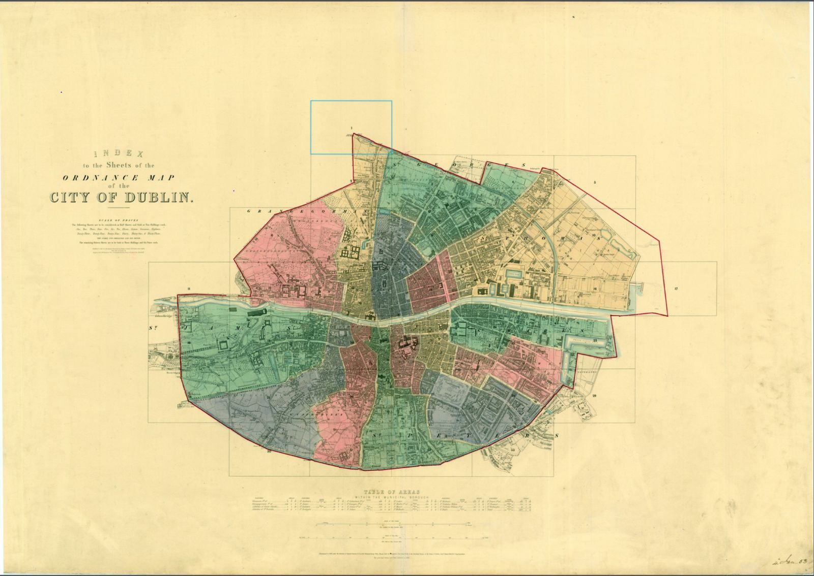

Tallaght to Wellington Quay
The river that named Dublin
The Poddle is a small stream most Dubliners walk over without knowing. It rises in Tallaght and runs, mostly underground, to the Liffey at Wellington Quay. Yet it gave the city its name. Dubh Linn, the black pool, was a pool on the Poddle beside where Dublin Castle stands. For centuries it was the city’s drinking water, its moat and the power for its mills.
This site follows the river from source to sea, stop by stop, and tells the history of how monks, citizens and engineers bent it to the city’s needs.
The river walk
Fifteen stops, source to sea
Solid line: open channel. Dotted line: culverted underground.
- 01Fettercairn HouseTallaghtWhere the catchment begins, in the townland of Whitehall.
- 02BancroftTallaghtThe first stretch of the river you can walk beside.
- 03TymonTymon ParkA ruined castle, a glacial esker and the park built around them.
- 04Balrothery WeirFirhouse, on the DodderWhere medieval engineers turned the Dodder towards the city.Dodder water joins here
- 05M50 CrossingTymon ParkWhere the motorway sent the river underground.
- 06Dodder OverflowLakelands, TerenureA sluice that sends flood water back to the Dodder.
- 07Kimmage ManorKimmageA Victorian MP’s house, now a mission centre, built over the stream.
- 08The Stone BoatSundrive Road, KimmageThe medieval stone that splits the river two to one.⅓ of the flow leaves for St Thomas’s Abbey
- 09Mount ArgusHarold’s CrossFlood defences in a park, beside the church of a saint.
- 10Mount JeromeHarold’s CrossA Victorian cemetery, and perhaps another monks’ diversion.
- 11St Patrick’s CathedralBlackpitts and the LibertiesBuilt between two streams, and flooded by them for centuries.
- 12Ship Street LittleDublin CastleA sheep market, and a ravine as deep as any dig in Dublin.
- 13Dubh LinnDublin Castle gardensThe black pool that gave the city its name.
- 14Palace StreetDame StreetUnder the castle gate, Dame Street and the Olympia.
- 15Liffey OutfallWellington QuayJourney’s end, under Wellington Quay.


History
Five moments in the river’s story
- c. 840 onwardsAt the heart of DublinDrinking water, defence and power for the medieval city.
- Source to seaOriginsWhy a small stream ended up at the centre of the city.
- Before 1244The first diversionTurning the Dodder into the Poddle at Balrothery.
- 1245The second diversionThe Stone Boat splits the river for St Thomas’s Abbey.
- 1719The 1719 ActParliament acts to clean up the city’s water.